Chapter 5 · Part 2 — Gold in the Grass
Annie blew a kiss at him. “Be back soon, Henry,” she said cheerfully.
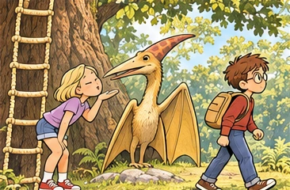
“Shush!” said Jack. And he led the way through the ferns. Slowly and carefully.
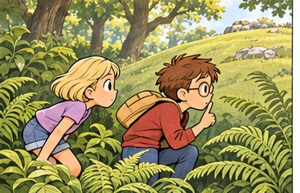
When he reached the bottom of the hill, he kneeled behind a fat bush.
Annie knelt beside him and started to speak.
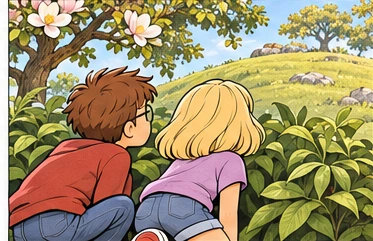
“Shush!” Jack put his finger to his lips.
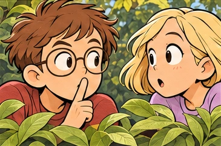
Annie made a face.
Jack peeked out at the Triceratops.
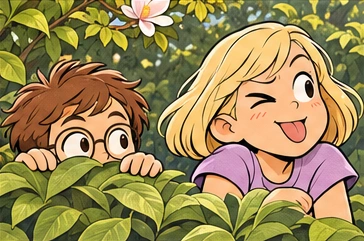
The dinosaur was incredibly big. Bigger than a truck. He was eating the flowers off a magnolia tree.
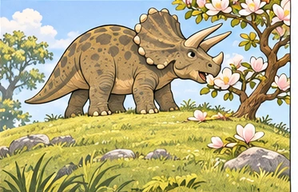
Jack slipped his notebook out of his pack. He wrote:
Annie nudged him.
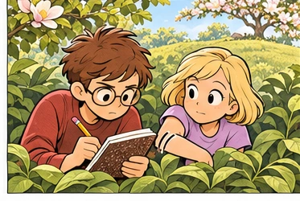
Jack ignored her. He studied the Triceratops again. He wrote:
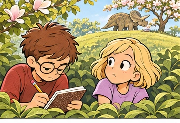
Annie nudged him hard.
Jack looked at her.
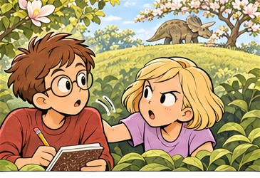
Annie pointed to herself. She walked her fingers through the air. She pointed to the dinosaur. She smiled.
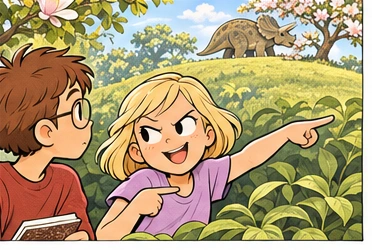
Was she teasing?
She waved at Jack.
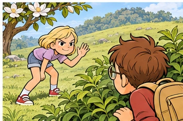
Jack started to grab her.
She laughed and jumped away. She fell into the grass. In full view of the Triceratops!
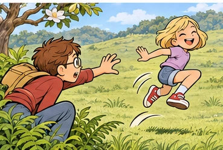
“Get back!” whispered Jack.
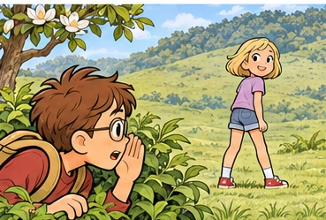
Too late. The big dinosaur had spotted Annie. He gazed down at her from the hilltop. Half of a magnolia flower was sticking out of his mouth.
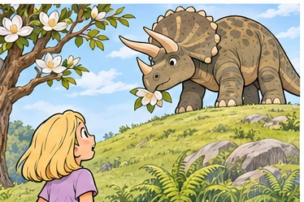
“Oops,” said Annie.
“Get back!” Jack shouted at her.
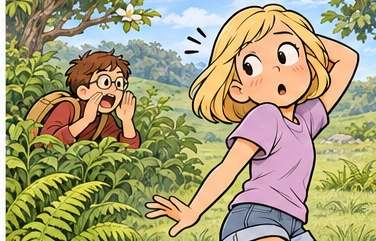
“He looks nice, Jack.”
“Nice? Watch out for his horns, Annie!”
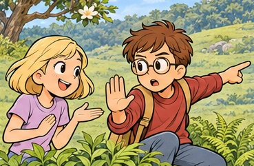
“No. He’s nice, Jack.”
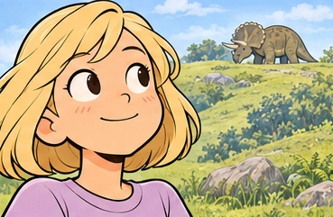
Nice?
But the Triceratops just gazed calmly down at Annie. Then he turned and loped away. Down the side of the hill.
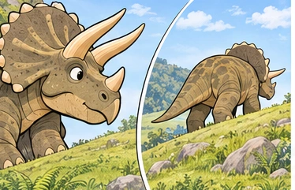
“Bye!” said Annie. She turned back to Jack. “See?”
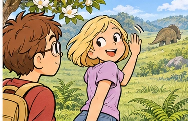
Jack grunted. But he wrote in his notebook:
“Come on. Let’s look around some more,” said Annie.
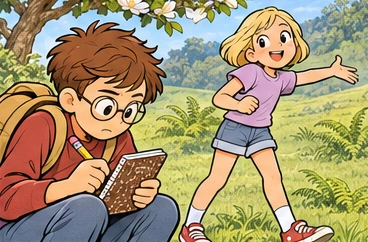
As Jack started after Annie, he saw something in the tall grass. He reached out and picked it up.
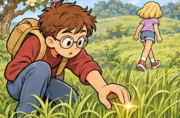
A . A gold .
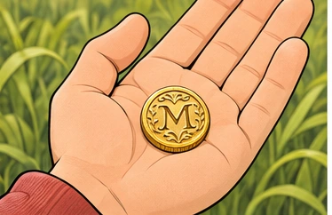
A letter was on the . A fancy M.
“Oh, man. Someone came here before us,” Jack said softly.
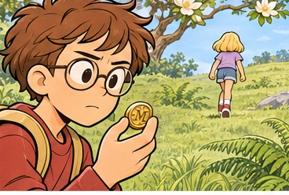